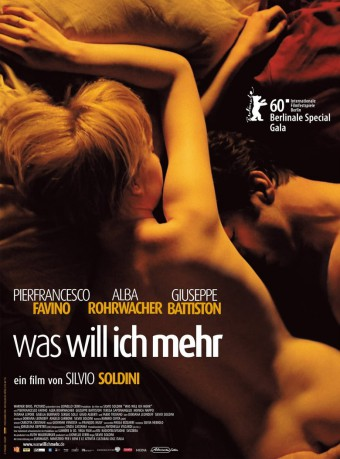

#8512 Was will ich mehr
Alternativ: Come Undone (Englischer Titel)
 
 IMDB-Wertung: 6.1 / 10
IMDB-Wertung: 6.1 / 10  Metascore: 0
Metascore: 0 
Anna lebt mit Alessio zusammen. Sie arbeitet als Angestellte und hat keine Träume mehr, denn eigentlich besitzt sie schon alles, was sie sich je wünschte. Doch dann trifft sie den verheirateten Domenico, und zum ersten Mal erlebt Anna wahre Liebe und Leidenschaft. Doch bald will Anna mehr, als nur eine Affäre.
Jahr: 2010
Dauer: 124 Minuten
FSK: 12
Land: Italien Studio: Alamode FilmTonspuren:
Untertitel: Deutsch,
Auflösung: 1080p (1920x824) Größe: 7792 MB
Genre: Drama, Liebe
Regisseur: Silvio Soldini
Drehbuch: Silvio Soldini
Soundtrack: Giovanni Venosta
Darsteller:
 Alba Rohrwacher als Anna
Alba Rohrwacher als Anna Pierfrancesco Favino als Domenico
Pierfrancesco Favino als Domenico- Giuseppe Battiston als Alessio
- Fabio Troiano als Bruno
- Monica Nappo als Chicca
- Antonino Bruschetta als Fratello di Domenico
- Bindu De Stoppani als Enrica
- Claudia Coli als Monica
- Teresa Saponangelo als Miriam
- Tatiana Lepore als Bianca
- Sergio Solli als Suocero di Domenico
- Gisella Burinato als Zia Ines
- Gigio Alberti als Dott. Morini
- Francesca Capelli als Agnese
- Danilo Finoli als Ciro
- Martina De Santis als Isa
- Leonardo Nigro als Vincenzo
- Adriana De Guilmi als Madre di Anna
- Raffaella Onesti als Madre di Vincenzo
- Clelia Piscitello als Suocera di Domenico
- Carla Chiarelli als Carla
- Teresa Acerbis als Eliana
- Paolo Riva als Collega di Anna
- Michele Di Giacomo als Collega di Anna
- Elisabetta Piccolomini als Titolare società di catering
- Edwin Rojas Condor als Josè
- Hassan Azougagh als Ahmed
- Rocco Ozzimo als Barista
- Stefania Casiraghi als Insegnante
- Adriano Passoni als Allievo
- Federica Potenza als Nipote di Domenico
- Sebastiano Moise als Ragazzo in motorino
- Pietro Romano als Teo
- Nicoletta Maragno als Madre di Teo
Datei: X:\2010(N-Z)\Was will ich mehr (2010, FSK12, 1920x824).mkv seit 12.03.2018
Festplatte: HD 2010(G-Z)-2011(A-F)
 Es gibt insgesamt 115 Filme in der Gruppe '2010(N-Z)'
Es gibt insgesamt 115 Filme in der Gruppe '2010(N-Z)'